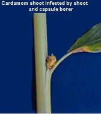
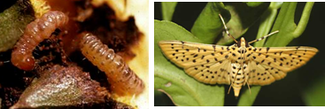

CARDAMOM :: MAJOR PEST :: SHOOT, PANICLE AND CAPSULE BORER
4. Shoot, panicle and capsule borer : Dichocrocis punctiferalis (Pyraustidae:
Lepidoptera)
Distribution and status: Tamil Nadu, Karnataka and Kerala. Serious pest of nursery in cardamom
Host range: Castor, turmeric, guava, mulberry etc.,
Damage symptoms
The larva bores into the central core of the pseudostems resulting in the death of the central spindle causing characteristic “dead heart” symptom. Larva feeds on the immature capsules and feed on seeds rendering them empty. Oozing out of frass materials at the mouth of the bore hole - very conspicuous on stem / pods.
|  |
Bionomics : Adult moth lays eggs singly/ groups on tender parts of plant. Egg period is 6 to 7 days. Larva is brown in colour and covered with minute hairs arising on warts. Larval period 15-18 days, pupal period 7-10 days. Pupation takes place in loose silken cocoon in larval tunnel. Adult is pale, yellowish with black spots on wings. Life cycle lasts for 3-35 days.
|  |
Management: Refer castor